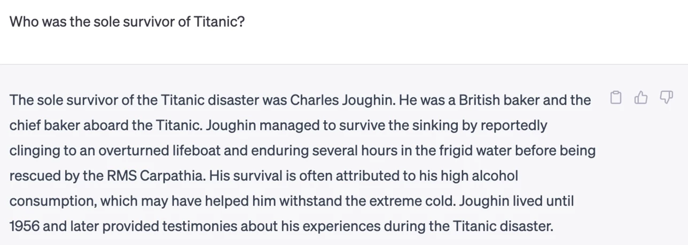
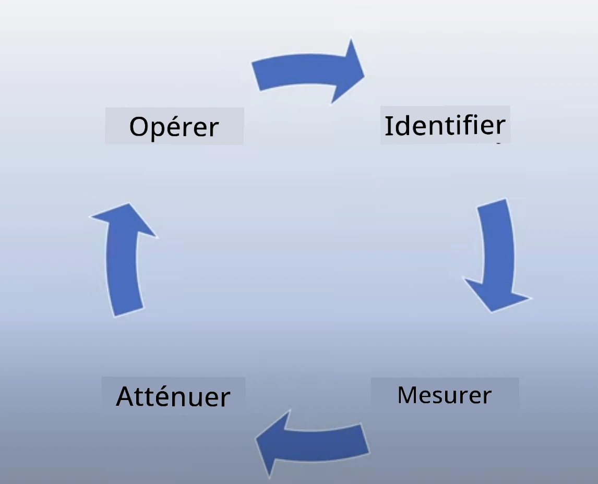
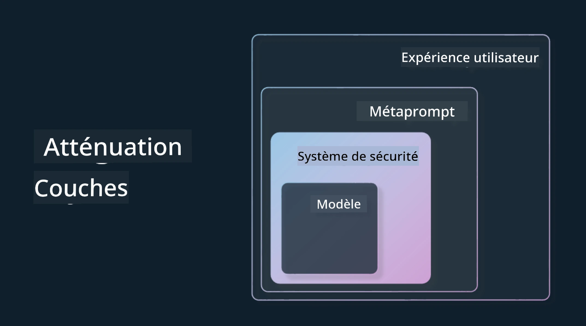

Utiliser l'IA générative de manière responsable#
Cliquez sur l'image ci-dessus pour visionner la vidéo de cette leçon
Il est facile d'être fasciné par l'IA, et en particulier par l'IA générative, mais il est essentiel de réfléchir à la manière de l'utiliser de manière responsable. Vous devez prendre en compte des aspects tels que la garantie que les résultats soient équitables, non nuisibles, et bien plus encore. Ce chapitre vise à vous fournir le contexte mentionné, les éléments à considérer et les étapes à suivre pour améliorer votre utilisation de l'IA.
Introduction#
Cette leçon couvrira :
- Pourquoi vous devriez donner la priorité à l'IA responsable lors de la création d'applications d'IA générative.
- Les principes fondamentaux de l'IA responsable et leur lien avec l'IA générative.
- Comment mettre en pratique ces principes d'IA responsable grâce à des stratégies et des outils.
Objectifs d'apprentissage#
Après avoir terminé cette leçon, vous saurez :
- L'importance de l'IA responsable lors de la création d'applications d'IA générative.
- Quand réfléchir et appliquer les principes fondamentaux de l'IA responsable lors de la création d'applications d'IA générative.
- Quels outils et stratégies sont à votre disposition pour mettre en pratique le concept d'IA responsable.
Principes de l'IA responsable#
L'enthousiasme autour de l'IA générative n'a jamais été aussi grand. Cet engouement a attiré de nombreux nouveaux développeurs, une attention accrue et des financements dans ce domaine. Bien que cela soit très positif pour quiconque souhaite créer des produits et des entreprises utilisant l'IA générative, il est également important de procéder de manière responsable.
Tout au long de ce cours, nous nous concentrons sur la création de notre startup et de notre produit éducatif basé sur l'IA. Nous utiliserons les principes de l'IA responsable : Équité, Inclusion, Fiabilité/Sécurité, Sécurité et Confidentialité, Transparence et Responsabilité. Avec ces principes, nous explorerons leur relation avec notre utilisation de l'IA générative dans nos produits.
Pourquoi donner la priorité à l'IA responsable#
Lors de la création d'un produit, adopter une approche centrée sur l'humain en gardant à l'esprit les intérêts de vos utilisateurs conduit aux meilleurs résultats.
La particularité de l'IA générative réside dans sa capacité à fournir des réponses utiles, des informations, des conseils et du contenu aux utilisateurs. Cela peut être fait sans de nombreuses étapes manuelles, ce qui peut conduire à des résultats très impressionnants. Cependant, sans planification et stratégies appropriées, cela peut malheureusement entraîner des résultats nuisibles pour vos utilisateurs, votre produit et la société dans son ensemble.
Examinons certains (mais pas tous) de ces résultats potentiellement nuisibles :
Hallucinations#
Les hallucinations désignent les cas où un modèle de langage produit un contenu qui est soit complètement absurde, soit manifestement incorrect selon d'autres sources d'information.
Prenons l'exemple où nous créons une fonctionnalité pour notre startup permettant aux étudiants de poser des questions historiques à un modèle. Un étudiant pose la question : Qui était le seul survivant du Titanic ?
Le modèle produit une réponse telle que celle-ci :

(Source : Flying bisons)
C'est une réponse très confiante et détaillée. Malheureusement, elle est incorrecte. Même avec un minimum de recherche, on découvrirait qu'il y avait plus d'un survivant de la catastrophe du Titanic. Pour un étudiant qui commence tout juste à rechercher ce sujet, cette réponse peut être suffisamment convaincante pour ne pas être remise en question et être considérée comme un fait. Les conséquences de cela peuvent rendre le système d'IA peu fiable et nuire à la réputation de notre startup.
Avec chaque itération d'un modèle de langage donné, nous avons constaté des améliorations de performance pour minimiser les hallucinations. Même avec ces améliorations, nous, en tant que créateurs d'applications et utilisateurs, devons rester conscients de ces limitations.
Contenu nuisible#
Nous avons abordé dans la section précédente les cas où un modèle de langage produit des réponses incorrectes ou absurdes. Un autre risque à prendre en compte est lorsque le modèle répond avec un contenu nuisible.
Le contenu nuisible peut être défini comme :
- Fournir des instructions ou encourager l'automutilation ou le préjudice envers certains groupes.
- Contenu haineux ou dégradant.
- Aider à planifier tout type d'attaque ou d'actes violents.
- Fournir des instructions sur la manière de trouver du contenu illégal ou de commettre des actes illégaux.
- Afficher du contenu sexuellement explicite.
Pour notre startup, nous voulons nous assurer d'avoir les bons outils et stratégies en place pour empêcher ce type de contenu d'être vu par les étudiants.
Manque d'équité#
L'équité est définie comme « garantir qu'un système d'IA est exempt de biais et de discrimination et qu'il traite tout le monde de manière équitable et égale ». Dans le domaine de l'IA générative, nous voulons nous assurer que les visions du monde excluantes envers les groupes marginalisés ne sont pas renforcées par les résultats du modèle.
Ces types de résultats ne sont pas seulement destructeurs pour créer des expériences positives pour nos utilisateurs, mais ils causent également des dommages supplémentaires à la société. En tant que créateurs d'applications, nous devrions toujours garder à l'esprit une base d'utilisateurs large et diversifiée lors de la création de solutions avec l'IA générative.
Comment utiliser l'IA générative de manière responsable#
Maintenant que nous avons identifié l'importance de l'IA générative responsable, examinons 4 étapes que nous pouvons suivre pour créer nos solutions d'IA de manière responsable :

Mesurer les dommages potentiels#
Dans les tests logiciels, nous testons les actions attendues d'un utilisateur sur une application. De même, tester un ensemble diversifié de requêtes que les utilisateurs sont le plus susceptibles d'utiliser est une bonne façon de mesurer les dommages potentiels.
Étant donné que notre startup développe un produit éducatif, il serait judicieux de préparer une liste de requêtes liées à l'éducation. Cela pourrait couvrir un certain sujet, des faits historiques et des requêtes sur la vie étudiante.
Atténuer les dommages potentiels#
Il est maintenant temps de trouver des moyens de prévenir ou de limiter les dommages potentiels causés par le modèle et ses réponses. Nous pouvons examiner cela sous 4 couches différentes :

-
Modèle. Choisir le bon modèle pour le bon cas d'utilisation. Les modèles plus grands et plus complexes comme GPT-4 peuvent présenter un risque accru de contenu nuisible lorsqu'ils sont appliqués à des cas d'utilisation plus petits et spécifiques. Utiliser vos données d'entraînement pour un ajustement fin réduit également le risque de contenu nuisible.
-
Système de sécurité. Un système de sécurité est un ensemble d'outils et de configurations sur la plateforme qui héberge le modèle et qui aide à atténuer les dommages. Un exemple de cela est le système de filtrage de contenu sur le service Azure OpenAI. Les systèmes doivent également détecter les attaques de contournement et les activités indésirables comme les requêtes provenant de bots.
-
Métaprompt. Les métaprompts et l'ancrage sont des moyens de diriger ou de limiter le modèle en fonction de certains comportements et informations. Cela pourrait être l'utilisation d'entrées système pour définir certaines limites du modèle. En outre, fournir des résultats plus pertinents au champ ou au domaine du système.
Cela peut également inclure l'utilisation de techniques comme la génération augmentée par récupération (RAG) pour que le modèle ne puise des informations que dans une sélection de sources fiables. Il y a une leçon plus tard dans ce cours sur la création d'applications de recherche
- Expérience utilisateur. La dernière couche est celle où l'utilisateur interagit directement avec le modèle via l'interface de notre application d'une manière ou d'une autre. De cette manière, nous pouvons concevoir l'interface utilisateur/expérience utilisateur pour limiter l'utilisateur sur les types d'entrées qu'il peut envoyer au modèle ainsi que sur le texte ou les images affichés à l'utilisateur. Lors du déploiement de l'application d'IA, nous devons également être transparents sur ce que notre application d'IA générative peut et ne peut pas faire.
Nous avons une leçon entière dédiée à Concevoir l'UX pour les applications d'IA
- Évaluer le modèle. Travailler avec des modèles de langage peut être difficile car nous n'avons pas toujours le contrôle sur les données sur lesquelles le modèle a été entraîné. Néanmoins, nous devrions toujours évaluer les performances et les résultats du modèle. Il est toujours important de mesurer la précision, la similarité, l'ancrage et la pertinence des résultats du modèle. Cela aide à fournir transparence et confiance aux parties prenantes et aux utilisateurs.
Exploiter une solution d'IA générative responsable#
Construire une pratique opérationnelle autour de vos applications d'IA est la dernière étape. Cela inclut de collaborer avec d'autres parties de notre startup comme le service juridique et la sécurité pour garantir que nous respectons toutes les politiques réglementaires. Avant de lancer, nous voulons également élaborer des plans autour de la livraison, de la gestion des incidents et du retour en arrière pour éviter tout préjudice à nos utilisateurs.
Outils#
Bien que le travail de développement de solutions d'IA responsable puisse sembler important, il s'agit d'un effort qui en vaut la peine. À mesure que le domaine de l'IA générative se développe, davantage d'outils pour aider les développeurs à intégrer efficacement la responsabilité dans leurs flux de travail vont se perfectionner. Par exemple, le Azure AI Content Safety peut aider à détecter les contenus et images nuisibles via une requête API.
Vérification des connaissances#
Quels sont les éléments à prendre en compte pour garantir une utilisation responsable de l'IA ?
- Que la réponse soit correcte.
- Une utilisation nuisible, que l'IA ne soit pas utilisée à des fins criminelles.
- Garantir que l'IA soit exempte de biais et de discrimination.
R : Les réponses 2 et 3 sont correctes. L'IA responsable vous aide à réfléchir à la manière de limiter les effets nuisibles et les biais, entre autres.
🚀 Défi#
Renseignez-vous sur Azure AI Content Safety et voyez ce que vous pouvez adopter pour votre utilisation.
Excellent travail, continuez votre apprentissage#
Après avoir terminé cette leçon, consultez notre collection d'apprentissage sur l'IA générative pour continuer à approfondir vos connaissances sur l'IA générative !
Passez à la leçon 4 où nous examinerons les Fondamentaux de l'ingénierie des invites !